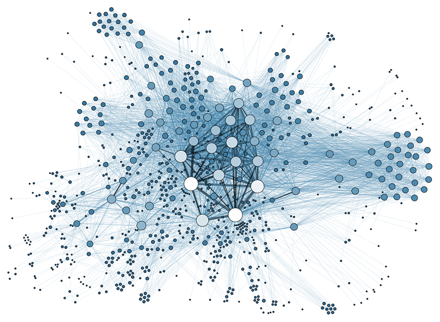
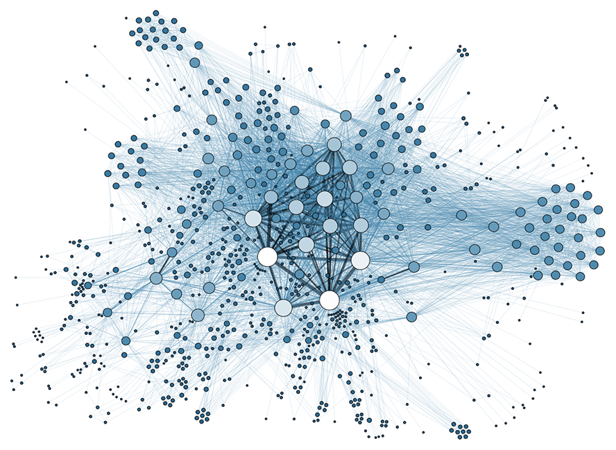

Moteurs De Compression Des Graphes Massifs
Une implémentation d'une panoplie de techniques les plus récentes de compression des graphes.
Tester 
Une implémentation d'une panoplie de techniques les plus récentes de compression des graphes.
Tester Un moteur de compression de graphe à travers ses motifs (ses sous-structures) les plus importantes
Un moteur de compression de graphes par les arbres k2-trees qui exploitent les propriétés de localité et de similarité dans les graphes du web.
Un moteur de compression de graphes exploitant l'ordre des noeuds et deux propriétés des grands graphes du web : la localité et la similarité.
Un moteur de compression de graphes s'inspirant de la décomposition modulaire, basé sur l'agrégation des noeuds selon trois critères : le voisinage, les étiquettes, et ou les motifs topologiques.